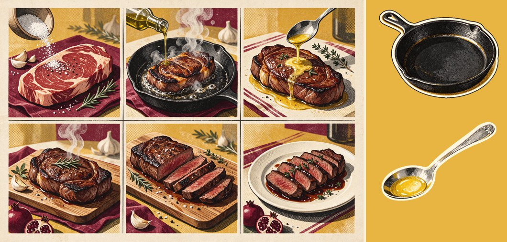

波普贴纸工作室
让一张张插画动起来。你只需给出主题，Agent 会原创生成带纸纹和半调网点的波普贴纸，再用代码安排它们什么时候移动、旋转、相遇，不需要你找图或上传素材。同一套素材，既能做成随手指滑动的网页，也能导出 MP4 短片。

交互案例 / Nº 01
法式黄油煎牛排
滑动看空勺从锅边舀起黄油，再把它淋回肉面。
打开牛排互动页 →发给你的 Agent 安装
复制下面这段话，发给你的 Agent 即可安装。
请帮我安装这个页面里的「波普贴纸工作室」技能：https://liangz77.cn/ai-demo/pop-sticker-studio/
安装后，这样调用
互动网页
用 $pop-sticker-studio 做一个手冲咖啡演示的互动网页。
视频
用 $pop-sticker-studio 做一个 10 秒的手冲咖啡演示的视频。